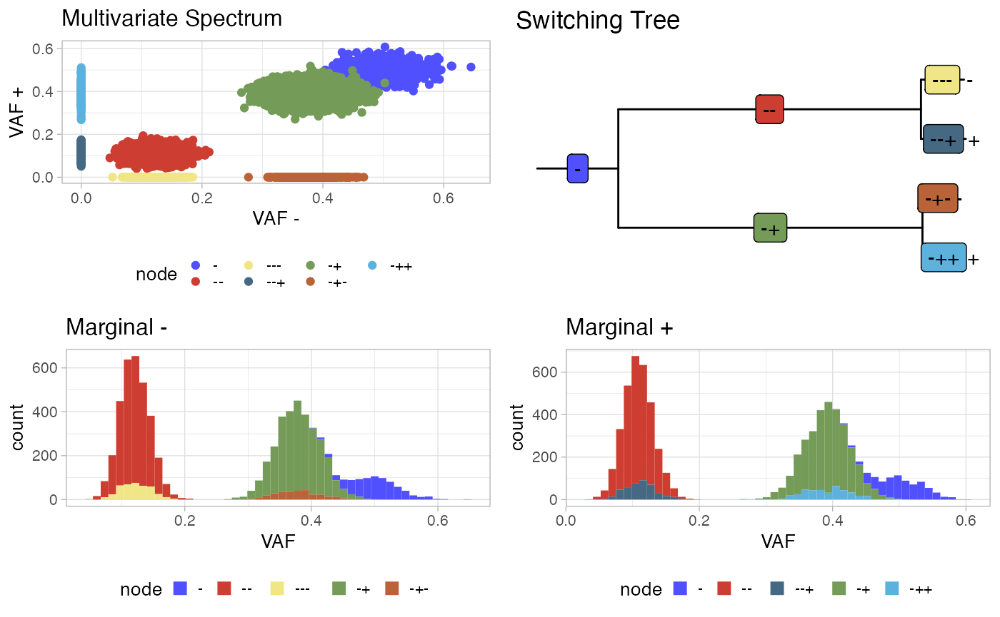
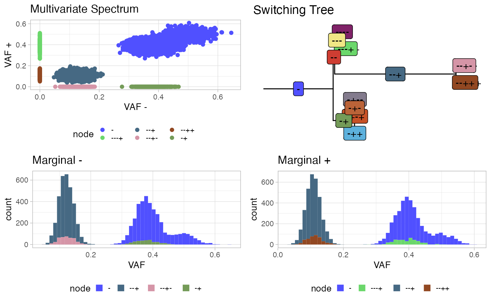
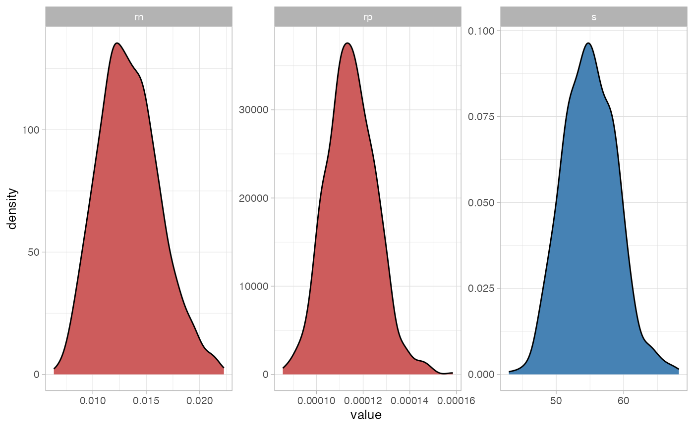

library(PEPI)
library(rstan)
#> Loading required package: StanHeaders
#>
#> rstan version 2.32.3 (Stan version 2.26.1)
#> For execution on a local, multicore CPU with excess RAM we recommend calling
#> options(mc.cores = parallel::detectCores()).
#> To avoid recompilation of unchanged Stan programs, we recommend calling
#> rstan_options(auto_write = TRUE)
#> For within-chain threading using `reduce_sum()` or `map_rect()` Stan functions,
#> change `threads_per_chain` option:
#> rstan_options(threads_per_chain = 1)
library(cmdstanr)
#> This is cmdstanr version 0.4.0.9001
#> - CmdStanR documentation and vignettes: mc-stan.org/cmdstanr
#> - Use set_cmdstan_path() to set the path to CmdStan
#> - Use install_cmdstan() to install CmdStan
library(dplyr)
#>
#> Attaching package: 'dplyr'
#> The following objects are masked from 'package:stats':
#>
#> filter, lag
#> The following objects are masked from 'package:base':
#>
#> intersect, setdiff, setequal, union
library(MCMCprecision)
library(VGAM)
#> Loading required package: stats4
#> Loading required package: splines
library(ggplot2)
library(ape)
#>
#> Attaching package: 'ape'
#> The following object is masked from 'package:dplyr':
#>
#> where
library(ggtree)
#> ggtree v3.4.4 For help: https://yulab-smu.top/treedata-book/
#>
#> If you use the ggtree package suite in published research, please cite
#> the appropriate paper(s):
#>
#> Guangchuang Yu, David Smith, Huachen Zhu, Yi Guan, Tommy Tsan-Yuk Lam.
#> ggtree: an R package for visualization and annotation of phylogenetic
#> trees with their covariates and other associated data. Methods in
#> Ecology and Evolution. 2017, 8(1):28-36. doi:10.1111/2041-210X.12628
#>
#> G Yu. Data Integration, Manipulation and Visualization of Phylogenetic
#> Trees (1st ed.). Chapman and Hall/CRC. 2022. ISBN: 9781032233574
#>
#> Guangchuang Yu, Tommy Tsan-Yuk Lam, Huachen Zhu, Yi Guan. Two methods
#> for mapping and visualizing associated data on phylogeny using ggtree.
#> Molecular Biology and Evolution. 2018, 35(12):3041-3043.
#> doi:10.1093/molbev/msy194
#>
#> Attaching package: 'ggtree'
#> The following object is masked from 'package:ape':
#>
#> rotate
library(treeio)
#> treeio v1.20.2 For help: https://yulab-smu.top/treedata-book/
#>
#> If you use the ggtree package suite in published research, please cite
#> the appropriate paper(s):
#>
#> LG Wang, TTY Lam, S Xu, Z Dai, L Zhou, T Feng, P Guo, CW Dunn, BR
#> Jones, T Bradley, H Zhu, Y Guan, Y Jiang, G Yu. treeio: an R package
#> for phylogenetic tree input and output with richly annotated and
#> associated data. Molecular Biology and Evolution. 2020, 37(2):599-603.
#> doi: 10.1093/molbev/msz240
#>
#> S Xu, Z Dai, P Guo, X Fu, S Liu, L Zhou, W Tang, T Feng, M Chen, L
#> Zhan, T Wu, E Hu, Y Jiang, X Bo, G Yu. ggtreeExtra: Compact
#> visualization of richly annotated phylogenetic data. Molecular Biology
#> and Evolution. 2021, 38(9):4039-4042. doi: 10.1093/molbev/msab166
#>
#> G Yu. Data Integration, Manipulation and Visualization of Phylogenetic
#> Trees (1st ed.). Chapman and Hall/CRC. 2022. ISBN: 9781032233574
#>
#> Attaching package: 'treeio'
#> The following object is masked from 'package:ape':
#>
#> drop.tip
library(ggpubr)
#>
#> Attaching package: 'ggpubr'
#> The following object is masked from 'package:ggtree':
#>
#> rotate
#> The following object is masked from 'package:ape':
#>
#> rotate
library(parallel)We generate a sample tree encoding epigenetic states and number of mutations of branches
M = 8000
mu = 10^-7
length = 2.7*10^9
s = 0.25
rate_minus = 1/7000
rate_plus = 1/8000
max_depth = 3
at = 10
bt = 80
gamma = 100
tree = generate_nodes(M = M,gamma = gamma,at=at,bt=bt,s = s,
rate_minus=rate_minus,rate_plus=rate_plus,mu,length,
max_depth = max_depth)
tree
#> # A tibble: 15 × 11
#> # Rowwise:
#> node level delta_m phi p_switch nu rate s m pi
#> <chr> <dbl> <dbl> <dbl> <dbl> <dbl> <dbl> <dbl> <dbl> <dbl>
#> 1 - 0 8000 1 1 0.0955 0.000143 0 764. 0.0955
#> 2 -- 1 3679. 0.508 0.409 0.775 0.000143 0 2851. 0.356
#> 3 -+ 1 3556. 0.492 0.359 0.805 0.000125 0.25 2865. 0.358
#> 4 --- 2 405. 0.489 0.0563 0.980 0.000143 0 397. 0.0496
#> 5 --+ 2 423. 0.511 0.0515 0.971 0.000125 0.25 411. 0.0513
#> 6 -+- 2 290. 0.419 0.0406 0.965 0.000143 0 280. 0.0350
#> 7 -++ 2 402. 0.581 0.0490 0.971 0.000125 0.25 390. 0.0488
#> 8 ---- 3 4.91 0.595 0 1 0.000143 0 4.91 0.000614
#> 9 ---+ 3 3.34 0.405 0 1 0.000125 0.25 3.34 0.000417
#> 10 --+- 3 6.07 0.495 0 1 0.000143 0 6.07 0.000759
#> 11 --++ 3 6.20 0.505 0 1 0.000125 0.25 6.20 0.000775
#> 12 -+-- 3 5.05 0.501 0 1 0.000143 0 5.05 0.000632
#> 13 -+-+ 3 5.03 0.499 0 1 0.000125 0.25 5.03 0.000629
#> 14 -++- 3 5.77 0.494 0 1 0.000143 0 5.77 0.000721
#> 15 -+++ 3 5.90 0.506 0 1 0.000125 0.25 5.90 0.000737
#> # ℹ 1 more variable: delta_t <dbl>
threshold = 0.1
tree = filter_nodes(tree,threshold = threshold)
tree = calculate_ccf(tree,s)
tree
#> # A tibble: 7 × 15
#> node level delta_m phi p_switch nu rate s m pi delta_t
#> <chr> <dbl> <dbl> <dbl> <dbl> <dbl> <dbl> <dbl> <dbl> <dbl> <dbl>
#> 1 - 0 8000 1 1 0.0955 0.000143 0 764. 0.0955 0
#> 2 -- 1 3679. 0.508 0.409 0.775 0.000143 0 2851. 0.356 5.24
#> 3 -+ 1 3556. 0.492 0.359 0.805 0.000125 0.25 2865. 0.358 5.32
#> 4 --- 2 405. 0.489 0 1 0.000143 0 405. 0.0507 0.653
#> 5 --+ 2 423. 0.511 0 1 0.000125 0.25 423. 0.0529 0.741
#> 6 -+- 2 290. 0.419 0 1 0.000143 0 290. 0.0363 0.490
#> 7 -++ 2 402. 0.581 0 1 0.000125 0.25 402. 0.0502 0.684
#> # ℹ 4 more variables: ccf_minus <dbl>, ccf_plus <dbl>, vaf_minus <dbl>,
#> # vaf_plus <dbl>
tree = add_tail_muts(mu = mu,tree = tree,vaf_min = 0.05)
spectrum = generate_spectrum(tree,vaf_min = 0.05,DP = 200,tail = F)
spectrum = spectrum %>% mutate(VAFx = Nx/DPx,VAFy = Ny/DPy)
p1 = plot_multivariate(spectrum)
p2 = plot_tree(tree)
p3 = plot_marginal(spectrum)
p = ggarrange(plotlist = list(p1,p2),ncol = 2,nrow = 1)
#> Warning: Removed 1 rows containing missing values (`geom_label()`).
p = ggarrange(plotlist = list(p,p3),ncol = 1,nrow = 2)
p
We infer the sample tree and epimutation rates. We start by creating a PEPI VAF object
x = init_vaf(data = spectrum)
print(x)
#> $VAF
#> # A tibble: 8,000 × 7
#> node Nx DPx Ny DPy VAFx VAFy
#> <chr> <int> <int> <int> <int> <dbl> <dbl>
#> 1 - 73 158 106 199 0.462 0.533
#> 2 - 110 205 87 182 0.537 0.478
#> 3 - 104 196 93 193 0.531 0.482
#> 4 - 95 197 94 191 0.482 0.492
#> 5 - 121 228 118 222 0.531 0.532
#> 6 - 102 200 112 219 0.51 0.511
#> 7 - 106 212 105 200 0.5 0.525
#> 8 - 109 210 85 202 0.519 0.421
#> 9 - 102 191 112 206 0.534 0.544
#> 10 - 85 204 102 196 0.417 0.520
#> # ℹ 7,990 more rows
#>
#> attr(,"class")
#> [1] "PEPI_VAF"We infer epimutation rates and cluster centroids
x = fit_tree(x,path_to_model = "models",
cmdstan_path = "/opt/anaconda3/envs/stan/bin/cmdstan/",
max_depth = 3,ndraws = 1000,
init = list(list(rn = 1/6000,rp = 1/9000)), seed = 50,
mu = 1e-7,l = 2.7*10^9,rho_n = 1,rho_p = 1,nu_t = 0.1,
qt = 1e4,rate_n = 1e-4,qn = 1e3,rate_p = 1e-4,
qp = 1e3,k = 1e4,gamma = 200)
#> Warning in dir.create(path_to_model): 'models' already exists
#> CmdStan path set to: /opt/anaconda3/envs/stan/bin/cmdstan
#> Init values were only set for a subset of parameters.
#> Missing init values for the following parameters:
#> vaf_minus_n, vaf_plus_n, nu_n, w_minus_nn, w_plus_nn, phi_nn, nu_nn, nu_np, w_minus_nnn, w_plus_nnn, phi_nnn, nu_nnn, nu_nnp, w_minus_npn, w_plus_npn, phi_npn, nu_npn, nu_npp, vaf_minus_nnnn, vaf_plus_nnnn, phi_nnnn, vaf_minus_nnnp, vaf_plus_nnnp, vaf_minus_nnpn, vaf_plus_nnpn, phi_nnpn, vaf_minus_nnpp, vaf_plus_nnpp, vaf_minus_npnn, vaf_plus_npnn, phi_npnn, vaf_minus_npnp, vaf_plus_npnp, vaf_minus_nppn, vaf_plus_nppn, phi_nppn, vaf_minus_nppp, vaf_plus_nppp
#> ------------------------------------------------------------
#> EXPERIMENTAL ALGORITHM:
#> This procedure has not been thoroughly tested and may be unstable
#> or buggy. The interface is subject to change.
#> ------------------------------------------------------------
#> Gradient evaluation took 0.050995 seconds
#> 1000 transitions using 10 leapfrog steps per transition would take 509.95 seconds.
#> Adjust your expectations accordingly!
#> Begin eta adaptation.
#> Iteration: 1 / 250 [ 0%] (Adaptation)
#> Iteration: 50 / 250 [ 20%] (Adaptation)
#> Iteration: 100 / 250 [ 40%] (Adaptation)
#> Iteration: 150 / 250 [ 60%] (Adaptation)
#> Iteration: 200 / 250 [ 80%] (Adaptation)
#> Success! Found best value [eta = 1] earlier than expected.
#> Begin stochastic gradient ascent.
#> iter ELBO delta_ELBO_mean delta_ELBO_med notes
#> 100 -1587797.592 1.000 1.000
#> 200 -415492.134 1.911 2.821
#> 300 -151159.120 1.857 1.749
#> 400 -117508.565 1.464 1.749
#> 500 -109184.621 1.187 1.000
#> 600 -102163.102 1.000 1.000
#> 700 -97477.629 0.864 0.286
#> 800 -95430.707 0.759 0.286
#> 900 -92912.825 0.678 0.076
#> 1000 -88103.496 0.615 0.076
#> 1100 -84723.433 0.519 0.069 MAY BE DIVERGING... INSPECT ELBO
#> 1200 -83419.475 0.239 0.055
#> 1300 -78204.345 0.070 0.055
#> 1400 -75739.814 0.045 0.048
#> 1500 -73958.835 0.040 0.040
#> 1600 -71439.167 0.037 0.035
#> 1700 -70592.772 0.033 0.033
#> 1800 -70585.990 0.031 0.033
#> 1900 -70042.238 0.029 0.033
#> 2000 -71656.366 0.026 0.024
#> 2100 -69385.132 0.025 0.024
#> 2200 -69494.089 0.024 0.024
#> 2300 -69907.567 0.017 0.023
#> 2400 -68744.001 0.016 0.017
#> 2500 -69933.771 0.015 0.017
#> 2600 -69518.977 0.012 0.012
#> 2700 -69730.624 0.011 0.008 MEDIAN ELBO CONVERGED
#> Drawing a sample of size 1000 from the approximate posterior...
#> COMPLETED.
#> Finished in 151.9 seconds.We obtain the inferred tree
x = get_average_tree(x,threshold = 0.1)
x$inferred_tree
#> # A tibble: 13 × 12
#> node level delta_m phi p_switch nu rate vaf_minus vaf_plus m
#> <chr> <dbl> <dbl> <dbl> <dbl> <dbl> <dbl> <dbl> <dbl> <dbl>
#> 1 - 0 8000 1 1 0.254 0.0134 0.410 4.09e-1 2.03e3
#> 2 -- 1 5312. 0.890 1 0.00832 0.0134 0.116 4.09e-1 4.42e1
#> 3 -+ 1 659. 0.110 0.0729 0.949 0.000115 0.293 2.22e-5 6.25e2
#> 4 --- 2 697. 0.132 1.00 0.192 0.0134 0.0000270 3.05e-1 1.34e2
#> 5 --+ 2 4570. 0.868 0.409 0.776 0.000115 0.116 1.04e-1 3.55e3
#> 6 -+- 2 17.3 0.509 0.207 0.553 0.0134 0.253 1.18e-5 9.55e0
#> 7 -++ 2 16.7 0.491 0 1 0.000115 0.000001 2.22e-5 1.67e1
#> 8 ---- 3 182. 0.322 0 1 0.0134 0.0000270 1 e-6 1.82e2
#> 9 ---+ 3 382. 0.678 0 1 0.000115 0.000001 3.05e-1 3.82e2
#> 10 --+- 3 487. 0.477 0 1 0.0134 0.116 1 e-6 4.87e2
#> 11 --++ 3 534. 0.523 0 1 0.000115 0.000001 1.04e-1 5.34e2
#> 12 -+-- 3 4.11 0.532 0 1 0.0134 0.253 1 e-6 4.11e0
#> 13 -+-+ 3 3.61 0.468 0 1 0.000115 0.000001 1.18e-5 3.61e0
#> # ℹ 2 more variables: pi <dbl>, leave <lgl>We get the cluster of mutations
x = get_clusters(x)We plot the distributions and inferred tree
p1 = plot_multivariate(x$VAF)
p2 = plot_tree(x$inferred_tree)
p3 = plot_marginal(x$VAF)
p = ggarrange(plotlist = list(p1,p2),ncol = 2,nrow = 1)
#> Warning: Removed 1 rows containing missing values (`geom_label()`).
p = ggarrange(plotlist = list(p,p3),ncol = 1,nrow = 2)
p
We infer s and epimutation clocks
x = fit_s(x,path_to_model = "models",
cmdstan_path = "/opt/anaconda3/envs/stan/bin/cmdstan/",
threshold = 0.1,
ndraws = 1000,init = NULL,seed = 250,
mu = 1e-7,l = 2.7*10^9,ms = -1.8, sigma = 0.7, k = 1e3)
#> Warning in dir.create(path_to_model): 'models' already exists
#> CmdStan path set to: /opt/anaconda3/envs/stan/bin/cmdstan
#> Using node, leave as id variables
#> ld: warning: direct access in function 'stan::math::AutodiffStackSingleton<stan::math::vari_base, stan::math::chainable_alloc>::init()' from file 'src/cmdstan/main.o' to global weak symbol 'stan::math::AutodiffStackSingleton<stan::math::vari_base, stan::math::chainable_alloc>::init()::is_initialized' from file '/var/folders/b1/qw7wc3td0szcvw17h0698lmm0000gn/T/Rtmp9bm8m3/model-18c314d5c0d9.o' means the weak symbol cannot be overridden at runtime. This was likely caused by different translation units being compiled with different visibility settings.
#> ld: warning: direct access in function 'stan::math::AutodiffStackSingleton<stan::math::vari_base, stan::math::chainable_alloc>::init()' from file 'src/cmdstan/main.o' to global weak symbol 'stan::math::AutodiffStackSingleton<stan::math::vari_base, stan::math::chainable_alloc>::init()::is_initialized' from file '/var/folders/b1/qw7wc3td0szcvw17h0698lmm0000gn/T/Rtmp9bm8m3/model-18c314d5c0d9.o' means the weak symbol cannot be overridden at runtime. This was likely caused by different translation units being compiled with different visibility settings.
#> ld: warning: direct access in function 'stan::math::AutodiffStackSingleton<stan::math::vari_base, stan::math::chainable_alloc>::init()' from file 'src/cmdstan/main.o' to global weak symbol 'stan::math::AutodiffStackSingleton<stan::math::vari_base, stan::math::chainable_alloc>::init()::is_initialized' from file '/var/folders/b1/qw7wc3td0szcvw17h0698lmm0000gn/T/Rtmp9bm8m3/model-18c314d5c0d9.o' means the weak symbol cannot be overridden at runtime. This was likely caused by different translation units being compiled with different visibility settings.
#> ld: warning: direct access in function '___cxx_global_var_init.155' from file 'src/cmdstan/main.o' to global weak symbol 'long double boost::math::lanczos::lanczos17m64::lanczos_sum_expG_scaled<long double>(long double const&)::denom' from file '/var/folders/b1/qw7wc3td0szcvw17h0698lmm0000gn/T/Rtmp9bm8m3/model-18c314d5c0d9.o' means the weak symbol cannot be overridden at runtime. This was likely caused by different translation units being compiled with different visibility settings.
#> ld: warning: direct access in function '___cxx_global_var_init.155' from file 'src/cmdstan/main.o' to global weak symbol 'long double boost::math::lanczos::lanczos17m64::lanczos_sum_expG_scaled<long double>(long double const&)::num' from file '/var/folders/b1/qw7wc3td0szcvw17h0698lmm0000gn/T/Rtmp9bm8m3/model-18c314d5c0d9.o' means the weak symbol cannot be overridden at runtime. This was likely caused by different translation units being compiled with different visibility settings.
#> ld: warning: direct access in function '___cxx_global_var_init.155' from file 'src/cmdstan/main.o' to global weak symbol 'long double boost::math::lanczos::lanczos17m64::lanczos_sum<long double>(long double const&)::denom' from file '/var/folders/b1/qw7wc3td0szcvw17h0698lmm0000gn/T/Rtmp9bm8m3/model-18c314d5c0d9.o' means the weak symbol cannot be overridden at runtime. This was likely caused by different translation units being compiled with different visibility settings.
#> ld: warning: direct access in function '___cxx_global_var_init.155' from file 'src/cmdstan/main.o' to global weak symbol 'long double boost::math::lanczos::lanczos17m64::lanczos_sum<long double>(long double const&)::num' from file '/var/folders/b1/qw7wc3td0szcvw17h0698lmm0000gn/T/Rtmp9bm8m3/model-18c314d5c0d9.o' means the weak symbol cannot be overridden at runtime. This was likely caused by different translation units being compiled with different visibility settings.
#> ------------------------------------------------------------
#> EXPERIMENTAL ALGORITHM:
#> This procedure has not been thoroughly tested and may be unstable
#> or buggy. The interface is subject to change.
#> ------------------------------------------------------------
#> Gradient evaluation took 5.6e-05 seconds
#> 1000 transitions using 10 leapfrog steps per transition would take 0.56 seconds.
#> Adjust your expectations accordingly!
#> Begin eta adaptation.
#> Iteration: 1 / 250 [ 0%] (Adaptation)
#> Iteration: 50 / 250 [ 20%] (Adaptation)
#> Iteration: 100 / 250 [ 40%] (Adaptation)
#> Iteration: 150 / 250 [ 60%] (Adaptation)
#> Iteration: 200 / 250 [ 80%] (Adaptation)
#> Iteration: 250 / 250 [100%] (Adaptation)
#> Success! Found best value [eta = 0.1].
#> Begin stochastic gradient ascent.
#> iter ELBO delta_ELBO_mean delta_ELBO_med notes
#> 100 -12493.791 1.000 1.000
#> 200 -8566.658 0.729 1.000
#> 300 -7267.465 0.546 0.458
#> 400 -6838.692 0.425 0.458
#> 500 -6457.949 0.352 0.179
#> 600 -6178.629 0.301 0.179
#> 700 -5824.817 0.266 0.063
#> 800 -5632.417 0.237 0.063
#> 900 -5436.269 0.215 0.061
#> 1000 -5246.710 0.197 0.061
#> 1100 -5146.520 0.099 0.059
#> 1200 -5039.706 0.055 0.045
#> 1300 -4974.606 0.039 0.036
#> 1400 -4909.502 0.034 0.036
#> 1500 -4858.958 0.029 0.034
#> 1600 -4823.706 0.025 0.021
#> 1700 -4796.909 0.020 0.019
#> 1800 -4777.295 0.017 0.013
#> 1900 -4761.124 0.013 0.013
#> 2000 -4753.770 0.010 0.010 MEAN ELBO CONVERGED
#> Drawing a sample of size 1000 from the approximate posterior...
#> COMPLETED.
#> Finished in 0.1 seconds.We plot the inferred distributions
x = get_posterior(x)
#> Using node, leave as id variables
plot_inference(x,params = c("rn","rp","s"))
#> Using class as id variables
#> Using class as id variables
#> Using class as id variables
#> Using class as id variables
#> Using class as id variables
#> Using class as id variables